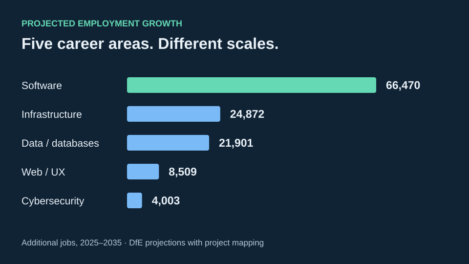

Academic analysis
UK Computing Career Outlook
How do five computing career areas compare in employment scale, projected growth and curriculum coverage?
Approximately 66,470 additional jobs projected for the software grouping between 2025 and 2035.
Explore the approach
What I did
Compared moving-average and exponential-smoothing forecasts using a common MSE validation period, examined regression relationships and explored K-means configurations. I contributed to the occupational mapping with a teammate and developed the individual Future Growth analysis.
What the evidence can tell us
Mixed occupational allocations use vacancy proxies. Short time series and small samples make modelling exploratory; association is not causation.